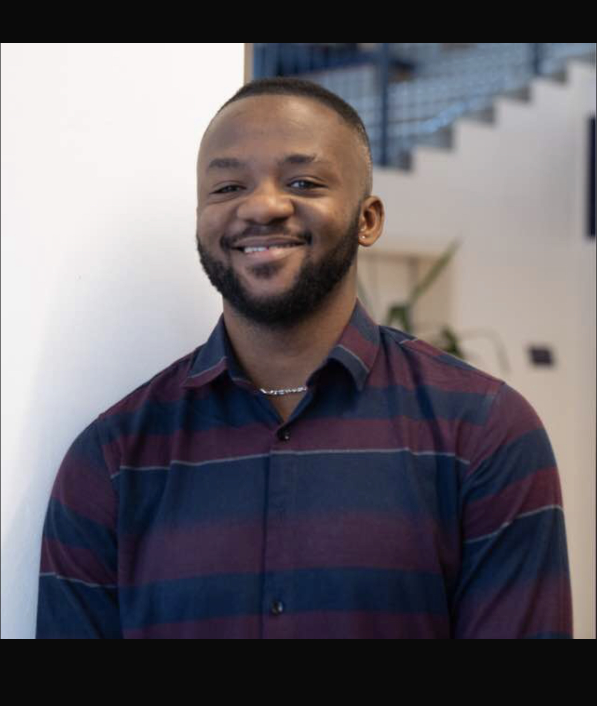

Responsible AI & evaluation
Human-centered methods for assessing cultural relevance, safety, fairness, and bias in language models.
AI researcher · machine learning engineer
I study how AI systems can become more responsible, culturally grounded, and useful in the places they serve.

Working across responsible AI, language, and speech.
My work sits at the intersection of responsible AI, AI evaluation, and natural language processing. I am particularly interested in how evaluation can reflect the language, culture, and lived experience of communities that are often absent from mainstream datasets.
Explore the researchHuman-centered methods for assessing cultural relevance, safety, fairness, and bias in language models.
Models, datasets, and evaluation practices that support languages and contexts underserved by current AI systems.
Domain-adapted ASR for African languages, with a focus on healthcare and real-world deployment.
Community-engaged data and evaluation processes that build AI systems with people, rather than only for them.
Recent publications and research contributions, with AfriStereo and African-language speech work at the center of my current trajectory.
Le Beux, Y., Audu, O., Ankeli, O.D. et al. · LREC 2026
Publication detailsBasilwango, E., Le Beux, Y., Ankeli, O.D. et al. · EACL AfricaNLP 2026
Publication detailsAnkeli, O.D., Adelani, L.H., Gottschalk, J. et al.
Under reviewI am interested in research collaborations and graduate opportunities in responsible AI, evaluation, low-resource NLP, and speech technologies.